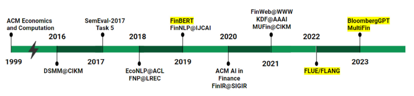
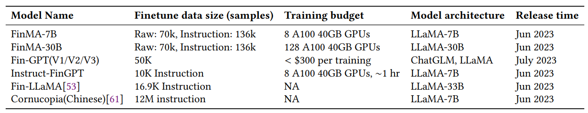
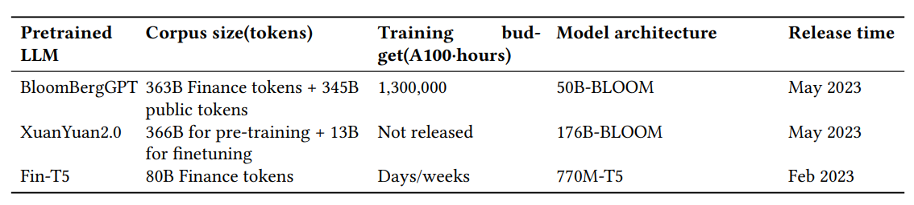
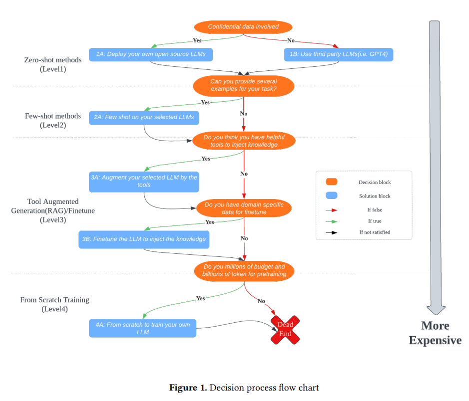
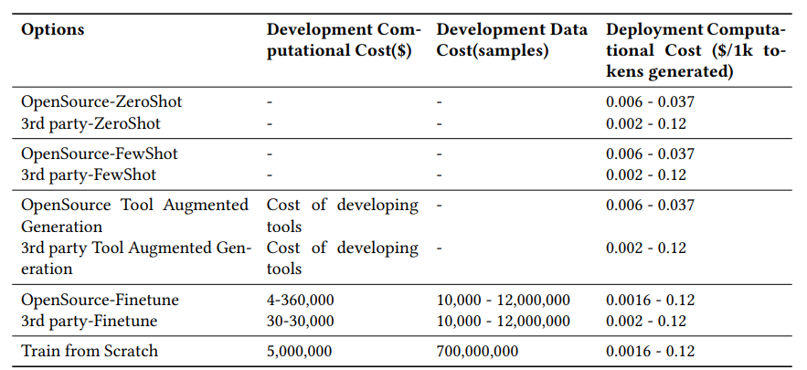

금융 분야의 LLM (2023)
LLM in Finance
최근 몇 년 동안 인공지능(AI)은 금융 분야 여러 영역에서 광범위하게 도입되고 있다.
(매매 및 포트폴리오 관리) 통계적 머신러닝 방법( SVM, Xgboost, 트리 기반 알고리즘들), 딥러닝 방법(RNN, LSTM, CNN 및 transformers)으로 이익과 손실 추정, 강화 학습은 자동 매매와 포트폴리오 최적화에 적용
(리스크 모델링) 사용자 이력 데이터와 실시간 거래 데이터를 활용하여 금융 사기 탐지를 위한 딥 러닝 기반 솔루션 개발, 신용 점수 스코어링 및 파산 또는 채무 불이행 예측
(텍스트 마이닝) 대규모 비정형 데이터에서 가치있는 정보를 추출하여 실시간으로 더 나은 거래 및 리스크 모델링에 도움을 줌. (예: Bledar Fazlija and Pedro Harder (2022)는 뉴스 기사에서 추출한 금융 시장 감성을 사용하여 주식 시장 지수의 방향을 예측)
(금융 자문 및 고객 서비스) AI 기반 챗봇으로 전자 상거래 및 전자 서비스에서 지원 기능 제공, 인력 비용 절감, 투자 자문 제공
현재의 딥 러닝 모델은 짧은 시간 동안 방대한 양의 데이터에서 가치 있는 통찰력을 효과적으로 추출하는 능력을 가지고 있어, 금융 산업에서 매우 중요한 역할을 하고 있다. 더욱이 거대 언어모형(Large Language Model, 이하 LLM)의 등장으로 이전에 해결하기 어려웠던 작업들도 가능해지며, 인공지능이 금융 산업에서의 응용 분야를 더욱 확장시키고 있다.

Figure 1 in Ghosh and Naskar (2023): Evolution of financial NLP in terms of conferences, workshops, and language models
LLM의 적용
금융 분야에서 LLM은 기존 모델에 비해 다양한 장점이 있다.
LLM은 광범위한 사전 학습 데이터를 활용하기에 자연어 명령을 이해할 수 있음
금융 데이터의 레이블이 부족하거나 문서에 대한 접근이 제한적인 지도 학습이 어려운 상황에서 유용
LLM은 제로샷 학습(zero-shot)을 통해 작업 수행 가능
LLM은 다른 지도 학습 모델에 비해 적응성과 유연성이 뛰어나며, 특정 작업을 위해 별도의 모델을 훈련시키는 대신 서로 다른 작업 지시에 따라 프롬프트를 수정함으로써 여러 작업을 처리할 수 있음.
LLM은 모호하고 복잡한 작업을 실행 가능한 계획으로 세분화하는 데에 탁월함.
- 이러한 능력을 보여주는 응용 프로그램으로 Auto-GPT, Semantic Kernel, LangChain 등이 있으며, 이러한 과정을 Tool Augmented Generation이라고 부름.
- 예를 들어, Auto-GPT는 사용자가 설정한 목표를 바탕으로 글로벌 주식 ETF와 채권 ETF 포트폴리오를 최적화할 수 있음.
- 이 과정에는 금융 데이터를 확보하고, 샤프 비율 최적화를 위해 파이썬 패키지를 사용하며, 최종 결과를 사용자에게 제공하는 등의 상세한 계획이 포함됨.
LLM 솔루션
LLM 솔루션에 접근하는 방법은 두 가지이다. 첫 번째는 LLM 서비스 제공 업체의 API를 활용하는 것이고, 두 번째는 오픈 소스 LLM을 사용하는 것이다.
- (API 활용) OpenAI, Google 및 Microsoft와 같은 회사들의 API 사용.
- 이러한 서비스는 기본 언어 모델 능력뿐만 아니라 특정 사용 사례에 맞춤화된 추가 기능도 제공.
- 예를 들어, OpenAI의 API에는 채팅, SQL 생성, 코드 완성 및 코드 해석과 같은 기능이 포함되어 있음.
- (오픈 소스 LLM) LLaMA, BLOOM, Flan-T5 등과 같은 모델을 Hugging Face 모델 저장소에서 다운로드
- API를 사용하는 것과 달리, 오픈 소스 모델을 호스팅하고 실행하기 위해 자체 호스팅이 필요
- 오픈 소스 모델을 활용하면 모델의 가중치에 접근할 수 있으며, 모델의 출력을 하위 작업에 맞게 사용자 정의할 수 있음.
- 그러나, 특정 하위 작업에 대해서는 zero-shot 또는 few-shot 학습이 최적의 성능을 내지 못할 수 있으며, 이러한 경우에는 레이블이 지정된 데이터, 전문 지식 및 계산 자원을 사용하여 모델을 미세 조정하여야 함.
미세 조정(fine-tuning)
금융 분야에서 LLM을 미세 조정(fine-tuning)하면 도메인 특화 언어 이해와 문맥 이해가 향상되어, 금융 관련 작업에서 성능이 향상되고 더 정확하고 맞춤화된 결과를 생성할 수 있다.
LLM 미세 조정은 표준(standard) 미세 조정과 지시(instructional) 미세 조정으로 나눌 수 있다.
- (표준 미세 조정)에서는 모델이 raw 데이터셋에서 수정 없이 학습됨
- LLM에 직접 주요 문맥, 질문 및 원하는 답변을 입력하고, 학습 중에 답변이 마스킹되어 모델이 이를 생성하는 방법을 학습
- 이 접근 방식은 간단하면서도 효과적임
- (지시 미세 조정) 작업별로 특화된 데이터셋을 생성하여 모델의 학습 프로세스를 조정
- 이 방법은 예제와 지침을 제공하여 모델이 특정 작업에서 우수하게 최적화되거나 원하는 결과물을 생성하도록 도움
- 지시 미세 조정은 표준 미세 조정보다 구현이 덜 간단하지만, 모델을 보다 정확하게 안내할 수 있음
LLM 미세 조정을 위해 Low-Rank Adaptation(LoRA) 및 양자화(quantization)와 같은 기법을 사용할 수도 있다. - LoRA 사용: 전체 행렬 대신 원래 가중치 행렬의 low-rank(낮은 순위) 분해 인자를 미세 조정할 수 있음. 이 접근 방식은 학습 가능한 매개 변수의 수를 크게 줄여 총 학습 시간을 단축. - float32 대신 bfloat16 또는 float16과 같은 낮은 수치 정밀 사용 비트 너비를 반으로 줄이면 메모리 사용량이 50% 감소하고, 연산 속도도 2배 빨라짐.
미세조정된(Fine-tuned) LLM
Fine-tuned 금융 LLM의 성능은 금융 분류 작업과 금융 생성 작업 두 가지 범주로 평가될 수 있다.
- 금융 분류(finance classification)는 감성 분석과 뉴스 제목 분류 등
- 금융 생성 작업(finance generative task)은 질문 답변, 뉴스 요약 및 개체명 인식 등

Table 1 in Li et al. (2023): Quick Overview of Finetuned Finance LLM
표1:
- (FinMA), 136,000개의 작업별 지시 샘플로 LLaMA를 미세조정
- (FinGPT) 금융 산업에서 FinLLM을 훈련하고 적용하기 위한 end-to-end 프레임워크를 제시. 경량화된 LoRA 기술을 사용하여 LLaMA 및 ChatGLM과 같은 오픈 소스 LLM을 약 50,000개의 샘플을 사용하여 미세조정(그러나 FinGPT의 평가는 오직 금융 분류 작업에만 한정)
- (Instruct-FinGPT)는 두 금융 감성 분석 데이터셋에서 유도된 10,000개의 지시 샘플로 LLaMA를 미세조정하며, 금융 분류 작업의 성능만을 평가
성능 평가:
- 모든 fine-tuned 금융 LLM은 원래의 기본 LLM (LLaMA) 및 다른 오픈 소스 LLM (BLOOM, OPT, ChatGLM)에 비해 금융 도메인에서 훨씬 우수한 성능을 보임
- 또한, 대부분의 금융 작업에서 BloombergGPT보다 우수한 성능을 보임
- ChatGPT 및 GPT-4와 같은 강력한 일반 LLM과 비교했을 때, fine-tuned 금융 LLM은 대부분의 금융 분류 작업에서 우수한 성능을 보임. 그러나 금융 생성 작업에서는 fine-tuned LLM이 유사하거나 더 나쁜 성능을 보이며, 생성 능력을 향상시키기 위해서는 더 많은 고품질 도메인 특화 데이터셋이 필요함
스크래치로부터 사전학습(Pretrain from scratch)

Table 2 in Li et al. (2023): Quick Overview of from scratch trained Finance LLMs
표 2:
- 주로, 사전 훈련(pretraining) 단계에서 공공 데이터셋과 금융 특화 데이터셋을 결합
- BloombergGPT는 일반 텍스트와 금융 관련 텍스트가 균형을 이루는 말뭉치로 구성
- BloombergGPT는 주로 Bloomberg에 관련된 50억 토큰의 하위 집합에 의존하는데, 이는 전체 훈련 말뭉치의 0.7%에 불과함. 이 목표 말뭉치는 금융 벤치마크에서의 성능 향상에 기여함
성능 평가:
- BloombergGPT와 Fin-T5는 각각 BLOOM176B와 T5 같은 원래 모델들과 비교하여 우수한 성능을 보임
- 내부 private 훈련 말뭉치가 전체 훈련 말뭉치의 1% 미만을 구성하더라도, 동일한 도메인 및 분포 내 작업을 평가하는 데 상당한 향상을 이끌어낼 수 있음
- 이러한 모델들은 GPT-3나 PaLM만큼 강력하지는 않지만, 유사한 규모의 공개 모델들과 비교하여 유사하거나 우수한 성능을 보임
- 모델의 금융 관련 작업에서의 향상된 능력이 일반 능력에 영향을 미치지 않음
Decision Process
LLM을 선택하면:
(사전 훈련 지식 활용) 충분한 훈련 데이터나 주석이 달린 데이터가 부족하지만 상식적인 지식이 필요한 경우 유리함
(추론 및 신흥 능력) 금융 자문 분야에서 고객 요청은 종종 높은 변동성과 복잡한 대화를 나타내는 경우 유리함
(모델 협업 조정) LLM은 다양한 모델과 도구 사이에서 조정자 역할
의 장점이 있다.
LLM은 뛰어난 능력을 가지고 있지만, API를 활용하거나 오픈소스 LLM을 세밀하게 조정하는 경우에 상당한 비용이 발생한다. 따라서 작업이 명확하게 정의되어 있거나(예: 회귀, 분류, 순위 매기기), 주석이 달린 훈련 데이터가 풍부하다면 기존의 작은 모형을 사용하는게 적합할 수 있다.
아래 그림과 표를 통해 LLM 사용에 대한 decision process와 비용을 가늠해볼 수 있다.

Figure 1 in Li et al. (2023): Decision Process Flowchart

Table 3 in Li et al. (2023): Costs of Different LLM Options
참고자료
Li, Y., Wang, S., Ding, H., & Chen, H. (2023). Large language models in finance: A survey. In Proceedings of the Fourth ACM International Conference on AI in Finance (pp. 374-382).
Ghosh, S., & Naskar, S. K. (2023). Recent trends in financial natural language processing research. Science Talks, 8.